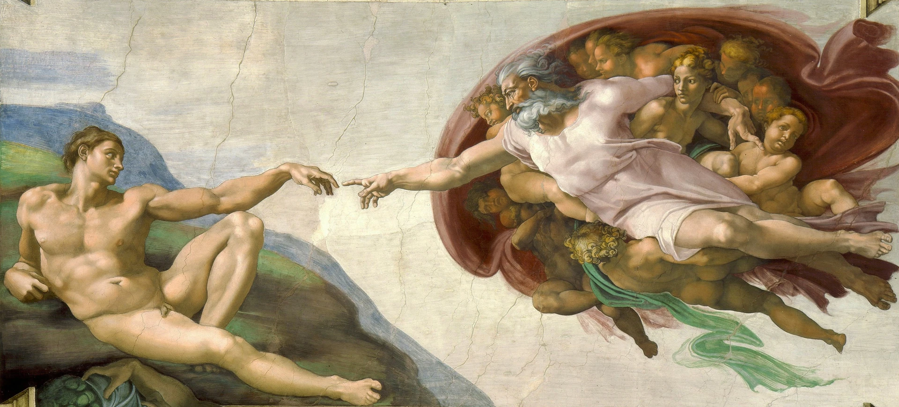
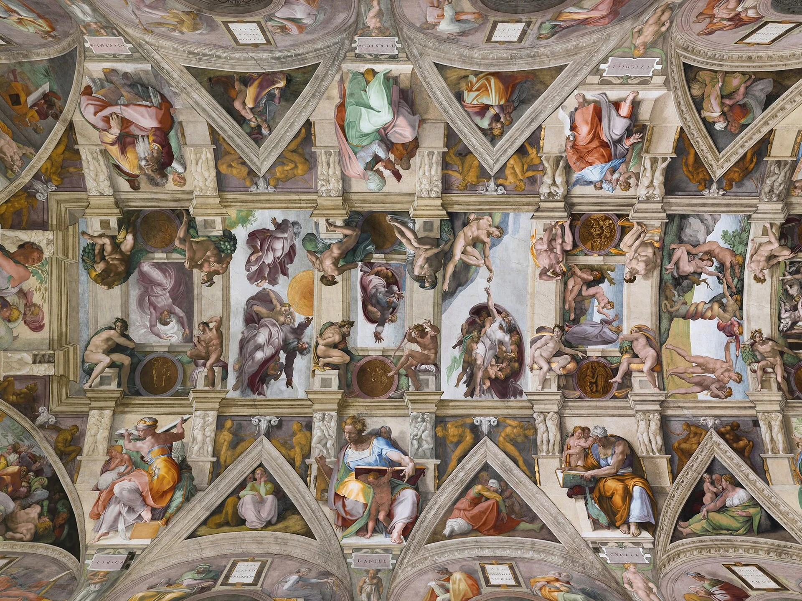
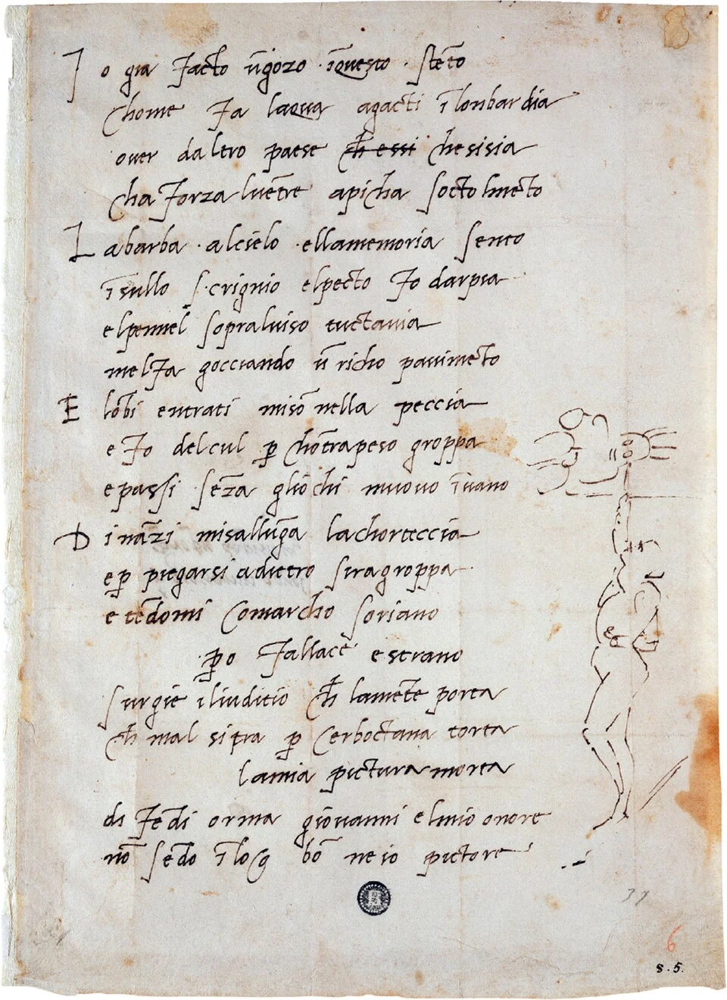
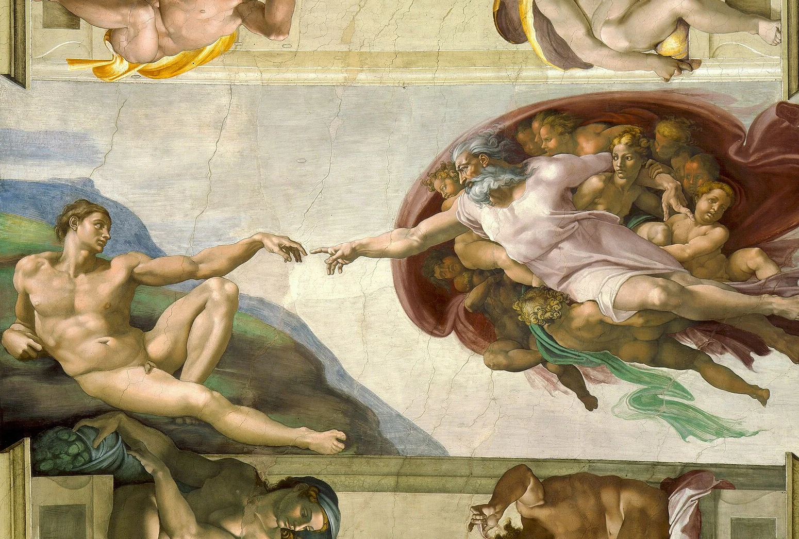
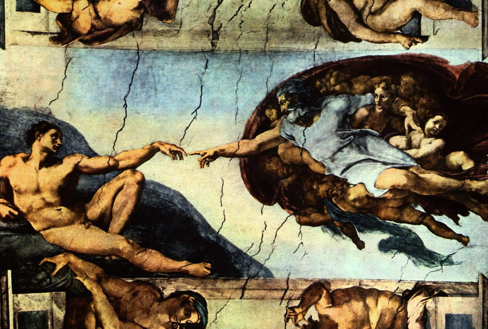
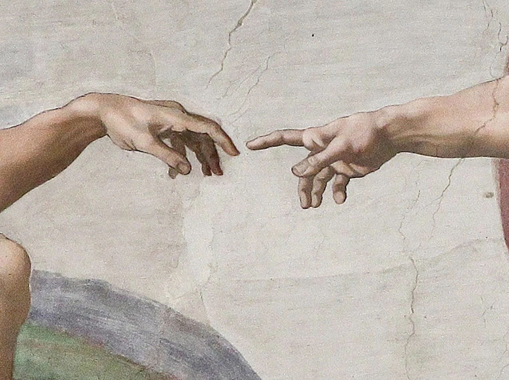

아직 펼치지 않은 카드그림 속 손 · 1아담의 창조두 손가락은 왜 닿지 않았을까요?두 손가락이 닿았을까, 안 닿았을까?
1508~1512년바티칸 · 시스티나 예배당 천장
아담의 창조
1512년 10월 31일, 미켈란젤로가 시스티나 예배당 천장 그림을 마쳤어요. 그 뒤 470년 가까이 촛불 연기와 먼지, 덧바른 아교가 천장을 덮었어요. 셋째 장면에서 손잡이를 밀어 그을음을 걷고, 색이 되살아나는 모습을 보세요.
옛날에 한 조각가가 아주 높은 천장에 그림을 그렸어. 오랫동안 먼지가 쌓여 그림이 어두워졌대. 우리가 손잡이를 밀어 먼지를 닦아 볼까?
검수 전 시안이에요(기준서 1판). 장면에는 바티칸 박물관, 바사리의 기록, 미켈란젤로의 시, 복원 책임자의 글에 있는 것만 옮겼어요. 기록이 서로 다른 곳은 ‘기록마다 다른 점’에 적었어요. 상상은 ‘눈 감고 상상해 보기’에만 썼어요.
시안 확인용카드 단계 미리 보기
1
천장에 간 금
1504년 5월, 시스티나 예배당 천장에 긴 금이 갔어요. 건물이 무게를 버티는 데 문제가 생긴 거예요. 바티칸 박물관은 이 금 때문에 옛 천장 그림이 크게 상해서, 교황 율리오 2세가 천장을 새로 그리게 했을 거라고 설명해요.
1508년 5월, 조각가 미켈란젤로가 계약을 맺었어요. 처음 계획은 예수의 열두 제자, 곧 열두 사도와 무늬였어요. 그가 그 계획을 ‘초라하다’고 하자, 교황은 무엇을 그릴지 그에게 맡겼어요.

그렇게 길이 40m, 폭 14m쯤 되는 천장에 그림을 그리는 일이 시작됐어요. 다 그리고 보니 천장에 나오는 인물이 336명이나 되었어요.
천장에 금이 가서 고치다가, 아예 새 그림을 그리기로 했대.
물어보기아주 높은 천장에 그림을 그리려면 무엇이 필요할까?
2
나무 발판 위의 네 해
미켈란젤로는 천장 바로 아래까지 나무로 짜 올린 발판, 곧 비계 위에서 그렸어요. 그 무렵 그는 친구 조반니에게 시 한 편을 써 보냈어요.
종이 오른쪽 가장자리에는, 선 채로 몸을 뒤로 젖히고 팔을 머리 위로 뻗어 천장에 그림을 그리는 자기 모습을 작게 그려 넣었어요.

“수염은 하늘로 들리고, 뒤통수는 등에 닿았네. 얼굴 위의 붓은 쉴 새 없이 물감을 떨어뜨려, 내 얼굴에 알록달록한 바닥을 깔아 놓네.”
미켈란젤로가 친구 조반니 다 피스토이아에게 보낸 시(1508~1512년) · 이탈리아어를 이 안내서가 옮김
흔히 누워서 그렸다고들 하지만, 시 속의 그는 누워 있지 않아요. 고개를 젖히고 몸을 활처럼 휜 채 서 있어요. 시의 끝에서 그는 친구에게 이렇게 부탁해요. “조반니, 이제 내 죽은 그림과 내 이름을 지켜 주게. 나는 있을 자리가 아닌 곳에 있고, 화가도 아니니.”
미술가들의 삶을 책으로 남긴 조르조 바사리는, 일을 마친 뒤에도 여러 달 동안 그가 고개를 뒤로 젖혀야만 편지를 읽고 그림을 볼 수 있었다고 적었어요.
고개를 뒤로 젖히고 오래 그렸더니, 물감이 얼굴에 똑똑 떨어졌대.
물어보기고개를 젖히고 천장을 한참 보면 목이 어떻게 될까?
3
그날의 색
1512년 10월 31일, 천장 그림이 모두 끝났어요. 다음 날인 11월 1일, 교황은 이 예배당에서 미사(가톨릭의 예배)를 드렸어요.
그 뒤 천장에는 먼지와 촛불 연기가 앉았어요. 빗물이 스며 하얗게 핀 얼룩을 가리려고, 17~18세기에 손질하던 사람들은 아교(짐승 가죽과 뼈로 만든 풀)를 덧발랐어요. 그 아교는 시간이 지나며 어둡게 변했어요. 1980년부터 복원가들은 비계에 올라 약품을 바른 뒤 물에 적신 해면(바다 동물로 만든 스펀지)으로 그 층을 닦아 냈어요. 손잡이를 밀어 보세요.
가운데 손잡이를 왼쪽 끝까지 밀면 그을음이 걷힌 천장이, 오른쪽 끝까지 밀면 그을음 낀 천장이 보여요.


왼쪽 · 같은 칸, 복원 전(찍은 해 모름 · 겹쳐 보기 좋게 이 안내서가 살짝 돌려 맞춤) · 미켈란젤로 그림 · 퍼블릭 도메인 · 위키미디어 공용
오른쪽 · 「아담의 창조」 칸, 복원 뒤 · 미켈란젤로 그림 · 퍼블릭 도메인 · 위키미디어 공용
왼쪽은 복원 전, 오른쪽은 복원 뒤예요. 그을음과 아교를 걷어 내자 하나님을 감싼 붉은 천과 아담 뒤 언덕의 초록, 살빛이 맑게 드러났어요. 굵고 검게 보이던 금은 가늘어졌지만, 복원 뒤에도 그대로 남아 있어요.
천장에 먼지와 끈적한 풀이 오래 쌓였대. 손잡이로 쓱 닦아 볼까?
물어보기먼지를 닦으니 어떤 색이 나왔어?
4
두 화가의 손
두 손을 가까이 보면, 회반죽에 가는 금이 여러 갈래 지나가요. 예배당 건물의 무게 문제는 그림을 다 그린 뒤에도 이어졌고, 그림에도 금을 냈어요.
1564년 예배당에 튼튼한 버팀벽을 세운 뒤, 금 때문에 상한 곳은 화가 도메니코 카르네발리가 고쳐 그렸어요. 복원 책임자였던 잔루이지 콜라루치는, 그가 아담의 손 한 부분을 다시 그렸다고 적었어요.

바로 옆 칸 「땅과 물을 나누심」에서는 하나님의 손 하나를 카르네발리가 다시 그렸어요. 그러니 오늘 우리가 보는 아담의 손에는 미켈란젤로와 카르네발리, 두 화가의 붓이 함께 닿아 있는 셈이에요.
아담 손의 한 부분은 나중에 다른 화가가 고쳐 그렸대.
물어보기사진에서 금이 간 줄을 손가락으로 따라가 볼까?
5
고개를 들면
천장 한가운데에는 창세기 이야기가 아홉 칸에 나뉘어 그려져 있어요. 아홉 장면은 예배당 안쪽 끝 제단 쪽에서부터 창세기 차례대로 이어져요. 미켈란젤로는 거꾸로, 사람들이 들어오는 입구 쪽부터 그렸어요. 입구 벽에서 「하와의 창조」까지 앞쪽 절반을 1510년 8월에 마쳤고, 「아담의 창조」는 그다음 뒤쪽 절반에 들어 있어요.
오늘도 사람들은 이 천장 아래에서 고개를 들어요.
그날 그 예배당에 함께 있었다면, 어디부터 올려다보았을까요?
1512년 11월 1일, 미사가 열린 예배당에 있었다면 어디부터 올려다볼까요?
지금도 많은 사람이 고개를 젖히고 이 그림을 봐.
물어보기너라면 천장에서 무엇부터 찾고 싶어?
눈 감고 상상해 보기
비계 위, 천장이 팔 하나 거리에 있어요. 아침에 바른 회반죽이 아직 축축하고, 석회 냄새가 나요. 아래 예배당에서는 발소리가 작게 울려요. 붓을 들어 올리자 물감 한 방울이 뺨에 떨어져요. 회반죽이 마르기 전에, 오늘 그릴 만큼을 다 그려야 해요.
눈을 감아 봐. 높은 나무 다리 위야. 위를 보면 천장이 코앞에 있어. 붓에서 물감이 똑! 얼굴에 떨어졌어.
나의 자리
처음 본 이 밝은 색은, 470년 가까이 그을음 아래 있었어요.
그을음을 걷어 낸 이 그림에서, 처음 볼 때는 몰랐던 무엇이 보이나요?
먼지를 닦아 낸 그림에서, 처음엔 못 본 게 보여?
마음에 닿는 한 줄을 고르거나 직접 써 보세요. 한 줄을 남기면 이 자리의 도장이 찍혀요. 이 기기에만 저장돼요.
더 깊이
이야기를 보다 궁금해질 만한 것들이에요. 답을 읽거나 짧은 영화로 보세요.
그을음을 닦는데, 왜 그림은 지워지지 않았을까요?
시스티나 예배당은 어떤 곳이에요?
뒷이야기
아직 펼치지 않은 이야기예요. 누르면 이야기가 펼쳐지고 색이 돌아와요. 더 알고 싶으면 근거를 따라가 보세요.
다 펼치면, 다음에 오실 때 새 이야기가 찾아와요.
오늘의 뒷이야기는 여기까지예요. 다음에 오시면 새 이야기가 기다리고 있어요.
펼친 뒷이야기 · 누르면 다시 볼 수 있어요
더 찾아보기
기록마다 다른 점
계약한 날 바티칸 박물관은 1508년 5월 8일에 계약했다고 적어요. 미술 이야기를 쓰는 블로그 아트 라크는 5월 10일이라고 적어요.
얼마나 걸렸나 바사리는 미켈란젤로가 스무 달 만에 혼자 다 그렸다고 적었어요. 하지만 1508년에 시작해 1512년 10월에 끝났으니 네 해 남짓 걸렸고, 아트 라크는 조수 다섯 명과 함께했다고 써요.
누워서? 서서? 누워서 그렸다는 이야기가 널리 퍼져 있어요. 미켈란젤로가 직접 쓴 시에는 고개를 젖히고 몸을 활처럼 휜 채 서 있는 모습이 나와요.
복원을 두고 복원팀은 그을음과 아교를 걷어 미켈란젤로의 색을 되찾았다고 봤어요. 미국 컬럼비아 대학의 제임스 벡 같은 학자들은 미켈란젤로가 마지막에 덧칠한 어두운 층까지 지워진다고 비판했어요. 콜라루치는 미켈란젤로가 마른 회반죽 위에 손댄 곳은 모두 찾아내 따로 보호한 뒤 닦았다고 답했어요.
그림과 함께 읽는 말씀
그리스도인들은 이 그림을 창세기의 사람 창조 이야기와 함께 읽어요. 말씀은 뜻만 옮기고, 본문은 대한성서공회 개역개정으로 이어 드려요.
창세기 1장 27절 하나님이 자기 형상대로 사람을 지으셨다고 해요.
창세기 2장 7절 하나님이 흙으로 사람을 빚고 코에 생명의 숨을 불어넣으시니, 사람이 살아 있는 존재가 되었다고 해요.
직접 가 보기
확인한 날 · 2026년 11월 18일 · 바뀌기 쉬운 정보라 정기적으로 다시 확인해요
바티칸 박물관 입장권으로 박물관과 시스티나 예배당을 그날 하루 볼 수 있어요. 월~토 오전 8시~오후 8시에 열고(마지막 입장 오후 6시), 닫기 30분 전에는 전시실에서 나가야 해요.
일요일은 쉬어요. 다만 매달 마지막 일요일은 오전 9시~오후 2시(마지막 입장 낮 12시 30분)에 무료로 열어요. 그날이 부활절이나 6월 29일, 12월 25·26·31일이면 무료 개방이 없어요.
쉬는 날은 1월 1·6일, 2월 11일, 3월 19일, 부활절 다음 월요일, 5월 1일, 6월 29일, 8월 14·15일, 11월 1일, 12월 8·25·26일이에요. 1512년에 교황이 이 예배당에서 미사를 드린 11월 1일은, 지금은 박물관이 쉬는 날이에요. 2026년 12월 4일과 18일에는 예배당만 오후 6시에 일찍 닫아요(마지막 입장 오후 5시 30분).
입장권은 일반 20유로, 할인 10유로예요. 공식 누리집에서 줄 서지 않는 예약을 하면 5유로가 더 붙어요(일반 25유로). 환불은 되지 않아요.
그을음 걷어 내기 금박
‘그날의 색’ 장면에서 손잡이를 양쪽 끝까지 밀어 복원 전과 뒤를 다 보면 카드에 금박이 입혀져요.
손잡이를 양쪽 끝까지 밀어 복원 전과 뒤를 다 보기
그날, 어디부터 올려다볼까 채색
둘 가운데 하나만 해도 카드가 채색돼요.
1512년 11월 1일, 어디부터 올려다볼지 고르기
아이와 함께 ‘영화처럼 보기’를 끝까지 보기
근거 보기 (27)
- 바티칸 박물관: 시스티나 예배당 천장(Volta) — 1504년 5월의 금과 브라만테의 보강, 1508년 5월 8일 계약과 열두 사도 계획, ‘초라하다’는 말과 새 계약, 입구 벽에서 「하와의 창조」까지 1510년 8월에 마침, 1512년 10월 31일 마침·11월 1일 미사, 아홉 장면
- 바티칸 박물관: 천장의 가운데 이야기 아홉 장면(빛과 어둠을 나누심 → … → 노아의 술 취함 차례)
- Biblical Archaeology Review: 「빛과 어둠을 나누심」 표지 설명 — 창세기 차례의 첫 장면이지만 가장 나중에 그림, 노아 이야기부터 거꾸로 그림
- Gianluigi Colalucci,「Michelangelo Buonarroti: Restoration of the frescoes on the vaulted ceiling and the Last Judgment in the Sistine Chapel」, Conservation Science in Cultural Heritage — 별이 뜬 하늘을 지움, 1504년의 쇠사슬과 금, 먼지·촛불 연기와 빗물로 핀 하얀 얼룩을 가리려 바른 아교 층, 약품과 천연 해면, 1980년 6월~1994년 4월 8일, 카르네발리가 다시 그린 아담의 손 한 부분과 「땅과 물을 나누심」의 하나님 손
- 조르조 바사리, 『미술가 열전』 미켈란젤로 편(G. 드 비어 영어 번역, 1912~15, 프로젝트 구텐베르크 32362) — 브라만테의 매단 비계와 받침대 비계, 절반을 열었을 때 온 로마가 옴, 스무 달, 여러 달 동안 고개를 젖혀야 편지를 읽음
- Rosanna Barbero, 시 「I’ho già fatto un gozzo in questo stento」 원문과 풀이(Margini 14호) — 시 전문, 1508~1512년
- 메트로폴리탄 미술관: 미켈란젤로의 시와 자기 모습 그림 원고(카사 부오나로티, 아르키비오 부오나로티 XIII, 111쪽, 28.3×20cm)
- Art Lark(2021): The Cracking Story of the Sistine Chapel Ceiling — 1512년 11월 1일 공개, 길이 40.5m·폭 14m, 인물 336명, 조수 다섯, 1508년 5월 10일 계약
- Robert Hughes, TIME 「Art: Out of Grime, a Domain of Light」(복원 8년째) — 17~18세기에 덧바른 아교, 벡 등의 비판과 콜라루치의 답
- 바티칸 박물관: 여는 시간과 쉬는 날(2026년 11월 18일 확인)
- 바티칸 박물관: 요금과 입장권(2026년 11월 18일 확인)
- Gianluigi Colalucci(위와 같은 글) — 재벌에서 더 씀: 천장과 기초 쪽 쇠사슬 12개, 1564년 비뇰라와 피로 리고리오의 버팀벽 셋, 카르네발리가 고친 다른 곳(「노아의 제사」의 두 사람, 예레미야의 목 한 부분), 그림의 물감이 바뀌지 않음, 피에르 마테오 다멜리아의 별 하늘
- 조르조 바사리, 『미술가 열전』 미켈란젤로 편(드 비어 영어 번역 9권, 인터넷 아카이브) — 모든 성인의 날 그림을 열자 온 도시가 흡족함, 교황의 ‘초라해 보인다, 금을 더하라’와 미켈란젤로의 대답, “내가 만족할 때 끝난다”, 발판에서 떨어뜨리겠다는 교황, 절반을 열자 온 로마와 라파엘로, 나머지 절반을 라파엘로에게 맡기려 한 브라만테, 밧줄을 판 목수와 딸의 혼수
- NYU 의학과 인문학 자료집: Creation of Adam(샌드라 버트먼) — 닿을 듯한 손가락, 창조 바로 앞의 순간, 하와로 읽는 여인과 아기 그리스도
- 브리태니커: 프레스코 — 갓 바른 회반죽에 물에 갠 물감, 회반죽과 함께 굳어 벽의 한 부분이 됨
- 런던 내셔널 갤러리 용어 풀이: 부온 프레스코 — 젖은 회반죽에 칠함, 하루에 그릴 만큼만 바름(조르나타)
- National Geographic(Laura Fedi, 2018): 미켈란젤로와 시스티나 예배당 — 1505년 무덤 일로 부름, 그림이 아니라 조각이 재주라며 꺼림, 콘디비의 기록(브라만테의 추천, 발판에서 떨어뜨리겠다는 위협, 지팡이), 식스토 4세의 이름, 새 교황을 뽑는 곳
- 바티칸 뉴스(Francesca Merlo, 2025년 5월 7일): 콘클라베 시작 — 추기경 133명이 미켈란젤로의 그림 아래 시스티나 예배당에 들어감
- Leo Steinberg, 「Who’s Who in Michelangelo’s Creation of Adam」(The Art Bulletin, 1992) 요약 — 1870년대 사진 뒤에야 하나님 팔 아래 인물들을 알아봄, 하와와 아기 그리스도
- 토머스 브라운, 『Pseudodoxia Epidemica』 5권 5장(1646년 처음 펴냄, 1672년 6판) — 배꼽 있는 아담과 하와 그림은 잘못
- Scientific American 손님 블로그(2010) — 1990년 메시버거의 뇌 단면 풀이와 ‘달 속의 사람’일 수 있다는 말
- Rome Reports(2019): 복원 25년 — 니혼 TV의 420만 달러와 3년 동안의 권리(1997년에 끝남)
- Michael Kimmelman, 뉴욕 타임스 기사(로어노크 타임스 1990년 5월 20일 실음) — 니혼 TV가 비용을 대고 사진을 한동안 맡음, 복원의 모든 과정이 필름에 남음
- The History of Art: 미켈란젤로의 벌거벗은 청년들(이뉴디) — 스무 명, 떡갈나무 잎과 도토리 다발
- 구글 아츠 앤 컬처: 75F 천장 받침과 벌거벗은 청년들 습작(카사 부오나로티, 1508~1509년) — 떡갈나무 잎은 델라 로베레 집안 표시
- 메트로폴리탄 미술관: 율리오 2세 델라 로베레 무덤 설계도(1505~6년) — 이탈리아 말 ‘로베레’는 떡갈나무
- Smarthistory: Caravaggio, Calling of Saint Matthew — 예수의 손은 아담의 손에서 옴, 둘째 아담
그림·사진·소리 출처
- 미켈란젤로 그림 · 퍼블릭 도메인 · 위키미디어 공용
- 미켈란젤로 그림 · 퍼블릭 도메인 · 위키미디어 공용
- 미켈란젤로 그림 · 퍼블릭 도메인 · 위키미디어 공용
- 미켈란젤로 글과 그림 · 퍼블릭 도메인 · 위키미디어 공용
- 사진: Aaron Logan · CC BY 2.5 · 위키미디어 공용
- 미켈란젤로 그림 · 퍼블릭 도메인 · 위키미디어 공용
- 미켈란젤로 그림 · 퍼블릭 도메인 · 위키미디어 공용
- 미켈란젤로 그림 · 퍼블릭 도메인 · 위키미디어 공용
- 미켈란젤로 그림 · 퍼블릭 도메인 · 위키미디어 공용
- 미켈란젤로 그림 · 퍼블릭 도메인 · 위키미디어 공용
- 사진: Aaron Logan · CC BY 2.5 · 위키미디어 공용
- 미켈란젤로 그림 · 퍼블릭 도메인 · 위키미디어 공용
- 미켈란젤로 그림 · 퍼블릭 도메인 · 위키미디어 공용
‘처음 만나는 기독교 문화’의 깊은 카드예요. 카드 단계와 남긴 글은 이 기기에만 저장돼요.